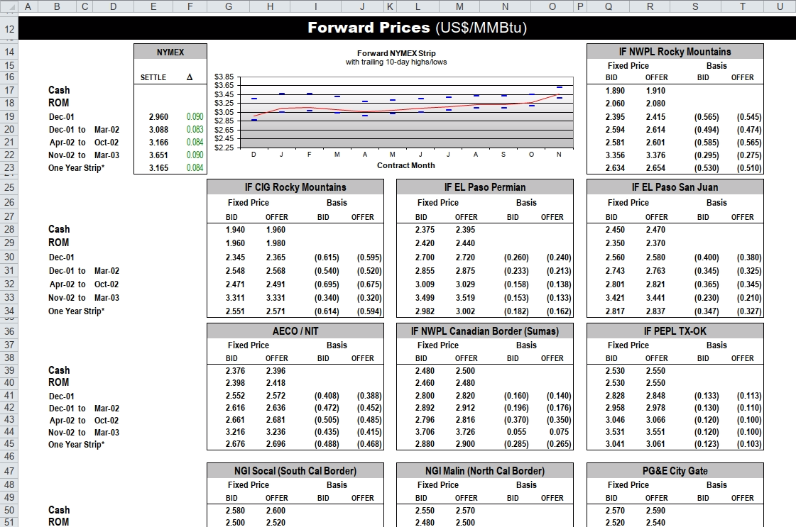

Small Multiples
Duncan Garmonsway
2025-02-01
Source:vignettes/small-multiples.Rmd
small-multiples.RmdThis vignette for the unpivotr package demonstrates unpivoting multiple similar tables from a spreadsheet via the tidyxl package. It is best read with the spreadsheet open in a spreadsheet program, e.g. Excel, LibreOffice Calc or Gnumeric.
Introduction
The spreadsheet is from the famous Enron subpoena, made available by Felienne Hermans, and has has previously been publicised by Jenny Bryan and David Robinson, in particular in Robinson’s article ‘Tidying an untidyable dataset’.
Here’s a screenshot:
knitr::include_graphics("enron-screenshot.png")
Preparation
This vignette uses several common packages.
##
## Attaching package: 'dplyr'## The following objects are masked from 'package:stats':
##
## filter, lag## The following objects are masked from 'package:base':
##
## intersect, setdiff, setequal, union##
## Attaching package: 'tidyr'## The following objects are masked from 'package:unpivotr':
##
## pack, unpackThe spreadsheet is distributed with the unpivotr package, so can be loaded as a system file.
path <- system.file("extdata/enron.xlsx", package = "unpivotr")Main
Importing the data
Spreadsheet cells are imported with the xlsx_cells()
function, which returns a data frame of all the cells in all the
requested sheets. By default, every sheet is imported, but we don’t have
to worry about that in this case because there is only one sheet in the
file. We can also straightaway discard rows above 14 and below 56, and
columns beyond 20.
cells <-
xlsx_cells(path) %>%
dplyr::filter(!is_blank, between(row, 14L, 56L), col <= 20) %>%
select(row, col, data_type, numeric, character, date)Cell formatting isn’t required for this vignette, but if it were, it
would be imported via xlsx_formats(path).
formatting <- xlsx_formats(path)Importing one of the multiples
The small multiples each have exactly one ‘Fixed Price’ header cell, so begin by filtering for those cells, and then move the selection up one row to get the title cells. The title cells are the top-left corner cell of each table.
title <-
dplyr::filter(cells, character == "Fixed Price") %>%
select(row, col) %>%
mutate(row = row - 1L) %>%
inner_join(cells, by = c("row", "col"))Use these title cells to partition the sheet.
partitions <- partition(cells, title)Taking one of the partitions, unpivot with behead(). The
compass directions "NNW" and "N" express the
direction from each data cell to its header. "NNW" means
“look up and then left to find the nearest header.”
partitions$cells[[1]] %>%
behead("NNW", "title") %>%
behead("NNW", "price") %>%
behead("N", "bid_offer") %>%
print(n = Inf)## # A tibble: 24 × 9
## row col data_type numeric character date title price
## <int> <int> <chr> <dbl> <chr> <dttm> <chr> <chr>
## 1 17 17 numeric 1.89 NA NA IF NWPL Rocky Mountains Fixed…
## 2 17 18 numeric 1.91 NA NA IF NWPL Rocky Mountains Fixed…
## 3 18 17 numeric 2.06 NA NA IF NWPL Rocky Mountains Fixed…
## 4 18 18 numeric 2.08 NA NA IF NWPL Rocky Mountains Fixed…
## 5 19 17 numeric 2.40 NA NA IF NWPL Rocky Mountains Fixed…
## 6 19 18 numeric 2.42 NA NA IF NWPL Rocky Mountains Fixed…
## 7 20 17 numeric 2.59 NA NA IF NWPL Rocky Mountains Fixed…
## 8 20 18 numeric 2.61 NA NA IF NWPL Rocky Mountains Fixed…
## 9 21 17 numeric 2.58 NA NA IF NWPL Rocky Mountains Fixed…
## 10 21 18 numeric 2.60 NA NA IF NWPL Rocky Mountains Fixed…
## 11 22 17 numeric 3.36 NA NA IF NWPL Rocky Mountains Fixed…
## 12 22 18 numeric 3.38 NA NA IF NWPL Rocky Mountains Fixed…
## 13 23 17 numeric 2.63 NA NA IF NWPL Rocky Mountains Fixed…
## 14 23 18 numeric 2.65 NA NA IF NWPL Rocky Mountains Fixed…
## 15 19 19 numeric -0.565 NA NA IF NWPL Rocky Mountains Basis
## 16 19 20 numeric -0.545 NA NA IF NWPL Rocky Mountains Basis
## 17 20 19 numeric -0.494 NA NA IF NWPL Rocky Mountains Basis
## 18 20 20 numeric -0.474 NA NA IF NWPL Rocky Mountains Basis
## 19 21 19 numeric -0.585 NA NA IF NWPL Rocky Mountains Basis
## 20 21 20 numeric -0.565 NA NA IF NWPL Rocky Mountains Basis
## 21 22 19 numeric -0.295 NA NA IF NWPL Rocky Mountains Basis
## 22 22 20 numeric -0.275 NA NA IF NWPL Rocky Mountains Basis
## 23 23 19 numeric -0.530 NA NA IF NWPL Rocky Mountains Basis
## 24 23 20 numeric -0.510 NA NA IF NWPL Rocky Mountains Basis
## # ℹ 1 more variable: bid_offer <chr>The same procedure can be mapped to every small multiple.
unpivoted <-
purrr::map_dfr(partitions$cells,
~ .x %>%
behead("NNW", "title") %>%
behead("NNW", "price") %>%
behead("N", "bid_offer")) %>%
select(-data_type, -character, -date)
unpivoted## # A tibble: 240 × 6
## row col numeric title price bid_offer
## <int> <int> <dbl> <chr> <chr> <chr>
## 1 17 17 1.89 IF NWPL Rocky Mountains Fixed Price BID
## 2 17 18 1.91 IF NWPL Rocky Mountains Fixed Price OFFER
## 3 18 17 2.06 IF NWPL Rocky Mountains Fixed Price BID
## 4 18 18 2.08 IF NWPL Rocky Mountains Fixed Price OFFER
## 5 19 17 2.40 IF NWPL Rocky Mountains Fixed Price BID
## 6 19 18 2.42 IF NWPL Rocky Mountains Fixed Price OFFER
## 7 20 17 2.59 IF NWPL Rocky Mountains Fixed Price BID
## 8 20 18 2.61 IF NWPL Rocky Mountains Fixed Price OFFER
## 9 21 17 2.58 IF NWPL Rocky Mountains Fixed Price BID
## 10 21 18 2.60 IF NWPL Rocky Mountains Fixed Price OFFER
## # ℹ 230 more rowsSo far, only the column headers have been joined, but there are also row headers on the left-hand side of the spreadsheet. The following code incorporates these into the final dataset.
row_headers <-
cells %>%
dplyr::filter(between(row, 17, 56), between(col, 2, 4)) %>%
# Concatenate rows like "Dec-01", "to", "Mar-02"
mutate(character = ifelse(!is.na(character),
character,
format(date, origin="1899-12-30", "%b-%y"))) %>%
select(row, col, character) %>%
nest(-row) %>%
mutate(row_header = map(data,
~ str_trim(paste(.x$character, collapse = " ")))) %>%
unnest(row_header) %>%
mutate(col = 2L) %>%
select(row, row_header)## Warning: Supplying `...` without names was deprecated in tidyr 1.0.0.
## ℹ Please specify a name for each selection.
## ℹ Did you want `data = -row`?
## Call `lifecycle::last_lifecycle_warnings()` to see where this warning was
## generated.
unpivoted <- left_join(unpivoted, row_headers, by = "row")
unpivoted## # A tibble: 240 × 7
## row col numeric title price bid_offer row_header
## <int> <int> <dbl> <chr> <chr> <chr> <chr>
## 1 17 17 1.89 IF NWPL Rocky Mountains Fixed Price BID Cash
## 2 17 18 1.91 IF NWPL Rocky Mountains Fixed Price OFFER Cash
## 3 18 17 2.06 IF NWPL Rocky Mountains Fixed Price BID ROM
## 4 18 18 2.08 IF NWPL Rocky Mountains Fixed Price OFFER ROM
## 5 19 17 2.40 IF NWPL Rocky Mountains Fixed Price BID Dec-01
## 6 19 18 2.42 IF NWPL Rocky Mountains Fixed Price OFFER Dec-01
## 7 20 17 2.59 IF NWPL Rocky Mountains Fixed Price BID Dec-01 to …
## 8 20 18 2.61 IF NWPL Rocky Mountains Fixed Price OFFER Dec-01 to …
## 9 21 17 2.58 IF NWPL Rocky Mountains Fixed Price BID Apr-02 to …
## 10 21 18 2.60 IF NWPL Rocky Mountains Fixed Price OFFER Apr-02 to …
## # ℹ 230 more rows34-line code listing
library(unpivotr)
library(tidyxl)
library(dplyr)
library(purrr)
library(tidyr)
library(stringr)
cells <-
xlsx_cells(system.file("extdata/enron.xlsx", package = "unpivotr")) %>%
dplyr::filter(!is_blank, between(row, 14L, 56L), col <= 20) %>%
select(row, col, data_type, numeric, character, date)
row_headers <-
dplyr::filter(cells, between(row, 17, 56), between(col, 2, 4)) %>%
mutate(character = ifelse(!is.na(character),
character,
format(date, origin="1899-12-30", "%b-%y"))) %>%
select(row, col, character) %>%
nest(-row) %>%
mutate(row_header = map(data,
~ str_trim(paste(.x$character, collapse = " ")))) %>%
unnest(row_header) %>%
mutate(col = 2L) %>%
select(row, row_header)
titles <-
dplyr::filter(cells, character == "Fixed Price") %>%
select(row, col) %>%
mutate(row = row - 1L) %>%
inner_join(cells, by = c("row", "col"))
partition(cells, titles)$cells %>%
purrr::map_dfr(~ .x %>%
behead("NNW", "title") %>%
behead("NNW", "price") %>%
behead("N", "bid_offer")) %>%
select(-data_type, -character, -date) %>%
left_join(row_headers, by = "row")